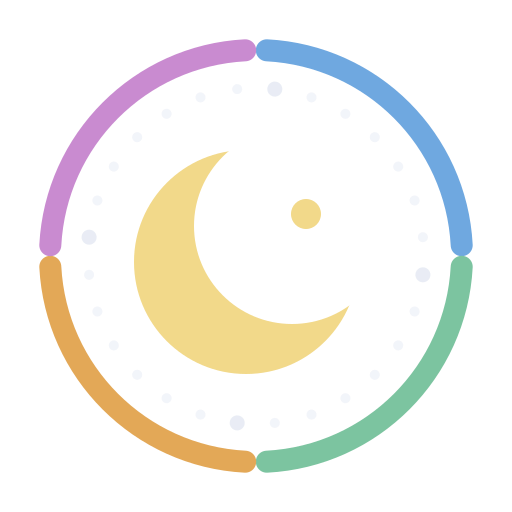

Kal-tirsiyada Soomaalida
Xilliyada, bilaha iyo sannadka, sida ay awoowayaasheen ugu tirin jireen dayaxa, qorraxda iyo xiddigaha.
Dooro tallaabada, kaddib dib ama hore u soco si aad u aragto godka uu dayaxu fadhiyay ama fadhin doono taariikh kasta. ◀◀ / ▶▶ waxay si toos ah u socodsiiyaan; mar kale taabo si aad u joojiso. Kiiboodhka: ← iyo →.
- Da'da
- Iftiinka
- Soo bax
- Dhac
Kal-tirsiyada maanta
Giraanta godadka
Qorraxdu 13kii cishaba hal god ayay bari u durugtaa, marka laga reebo Tar oo ay 14 cisho fadhido; afartii sanaba mar Libcas-na waa 14 cisho. Qorraxdu Dirir waxay gashaa 10/10. Godka ay qorraxdu fadhido iyo labada god ee dhinacyadeeda ah way qarsoon yihiin (madow). Xariiqda dahabiga ah ee god kasta hoostiisa ku taal waa meesha uu fadhiyo dayuxu marka uu dhammada yahay: marka dayaxu halkaas joogo waxa uu la siman yahay godka. Inta kale waa marka dayuxu karmada uu yahay . Taabo god kasta si aad u aragto xogtiisa.
Halka dayaxu fadhiyo
Sannadka Doonyaleyda
Kaltirsiga Xiddigaha Dhacaya iyo Bilaha Dayaxa
Sannadka Dabshidka
Bilowga iyo Dhammaadka Xilliyada
Bilo-dirir iyo Bilo-dambarsame
Dhalashada Bil-dayaxeedka iyo Godadka Dayaxa
Godad iyo Bilo
Dhulka Soomaalida wuxuu u qaybsamaa toddoba deegaan oo cimilo. Deegaan kasta bilihiisa iyo magacyadiisa godadka ayuu leeyahay. Dooro deegaan.
Isku xirxirka godadka
Jabuuti 28da god waxay u xirxirtaa lix koox. Qaabkani wuxuu u dhigmaa qaabka deegaannada kale ee godadka toddoba-toddoba isugu xirxira, waana kan Muuse Galaal u sheegay deegaannada II (Burco) iyo III (Hargeysa/Jigjiga). Kooxda dayaxu caawa fadhiyo waa la iftiimiyay.